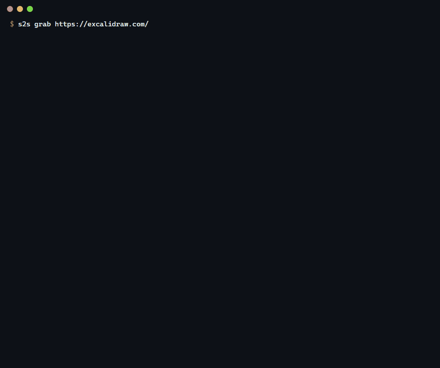
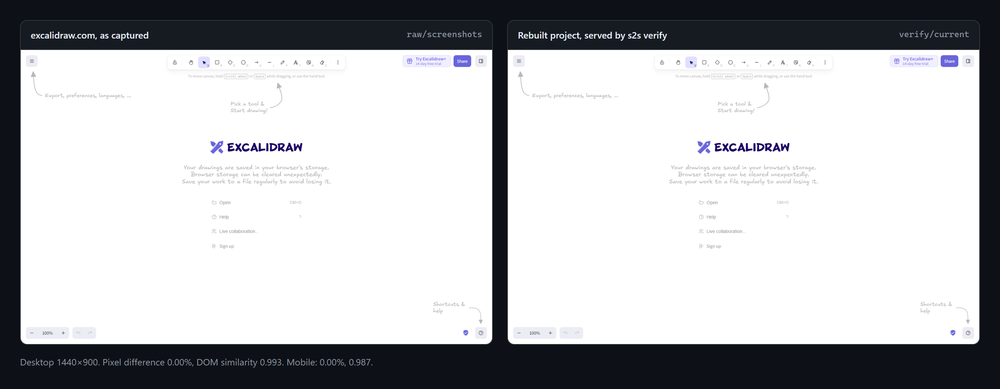
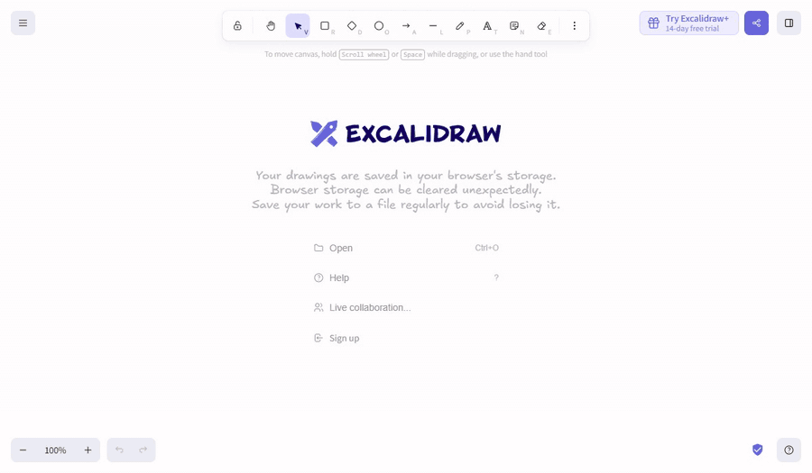
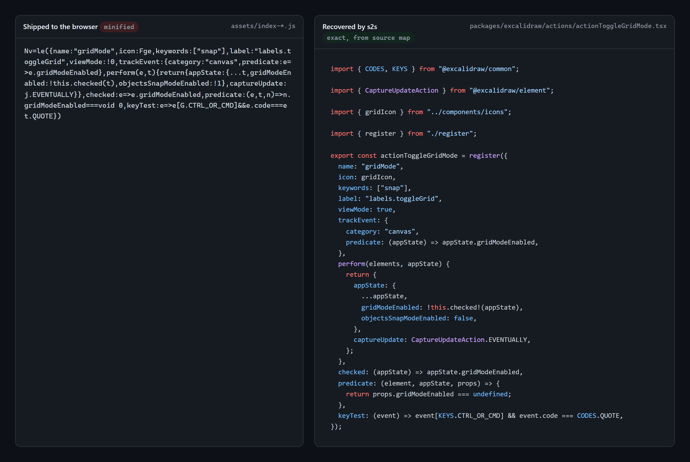

Turn a live URL into source you can build.
s2s captures a site in a real browser, recovers its source maps, detects its npm packages, unbundles the rest and writes a Vite project that builds as is. Then Claude Code does the naming, structure and types, checked by a screenshot-diff verify loop after every step.

Showcase: excalidraw.com
One s2s grab https://excalidraw.com/ run, then a Claude Code session working through the generated PROMPT.md. The numbers below come from the workspace's manifest.json and verify/report.md.

s2s verify with the captured responses replayed. Verify never contacts the real site.

The honest caveat. Excalidraw is close to the easiest target there is: its source maps carry the original files, so 700 first-party modules came back word for word and the renaming pass never ran. On a site without source maps, names and module boundaries are guesses that the agent improves but cannot know. CSS came from the compiled stylesheet, not the original SCSS, and verify only checks the first-load state of each page.
How it works
The CLI does the deterministic work. Every stage writes into one workspace folder and resumes from its manifest.json, so an interrupted grab picks up where it stopped.
capture
Loads each page in Chrome on desktop and mobile, records every request, DOM snapshot and screenshot, and fetches chunks the page never loaded.
maps
Recovers original sources from source maps, including inline maps and modules the bundler inlined without mappings.
detect
Identifies npm packages and versions from maps, banners, CDN URLs, version strings and AST fingerprints of about 1,000 packages.
unbundle
Splits first-party code into modules per bundler, un-minifies and de-transpiles it, and drops vendor code in favour of package imports.
scaffold
Writes a Vite project, installs it with scripts disabled, builds it once, and writes
AGENTS.md,PROMPT.mdandPROGRESS.md.verify
Serves the build against the replayed capture and fails on more than 2% of pixels changed, DOM similarity under 0.95, new console errors or failed requests.
Then Claude Code takes over
Naming, structure and types need judgement, so s2s leaves them to a coding agent running on your own subscription. The workspace tells it what to do and checks its work.
$ cd excalidraw-com $ claude "$(cat PROMPT.md)" # or run claude there and type /s2s
What the agent gets
AGENTS.md: the rules, the detected stack and packages, each fact linked to theanalysis/file it came from.PROGRESS.md: one checklist item per work group, in dependency order, plus packages to review..claude/settings.json: pre-approvess2s verify, the build, typecheck and git. Nothing else.
How it works through them
- Moves one group out of
src/_recovered/, renames, types and splits it. - Runs
s2s verify. On failure it fixes and retries. After three failures it reverts and notes why. - Commits per group, so the git history is the audit trail. On Excalidraw, verify stayed green across all 51 commits.
Limits and intended use
What it cannot do
- Recover server code, APIs, environment variables, comments, tests or history. Only what a visitor's browser receives.
- Rebuild Next.js, Nuxt, Astro or SvelteKit as projects in their own framework. They become a Vite single-page app.
- Know original names without source maps.
- Reach pages behind interactions the capture didn't trigger.
What it is for
- Learning how a site's frontend is built.
- Analysing code that already runs in your browser.
- Recovering frontend source you own but lost.
- Not for reusing someone else's code, ignoring a site's terms, or getting past logins, paywalls, CAPTCHAs or bot protection. s2s keeps polite defaults: a rate limit,
robots.txtand an honest user agent.